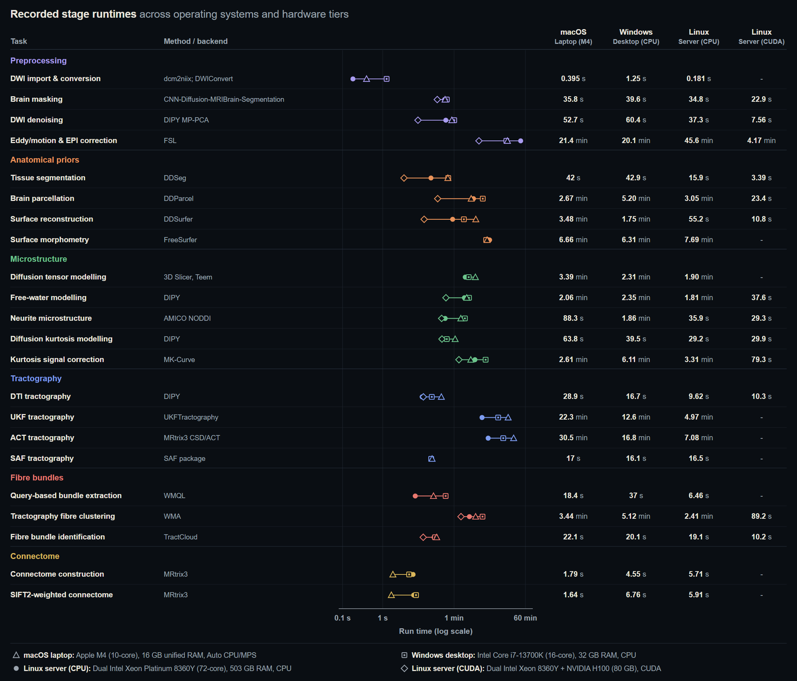
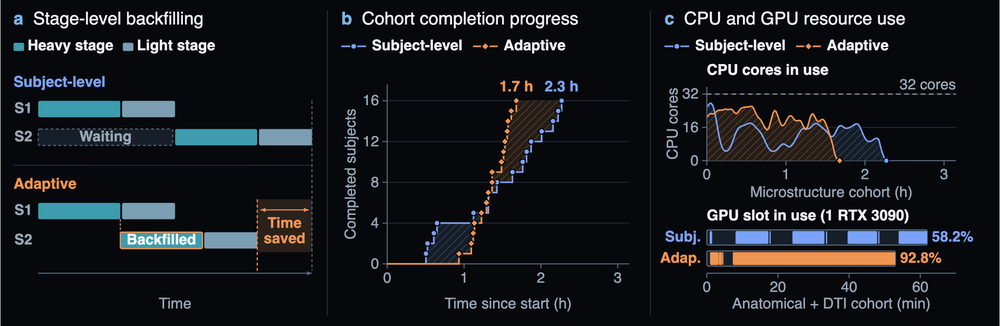

SlicerDSpace

Film
Built for  3D Slicer — native diffusion MRI workflows.
Source code
Download video
3D Slicer — native diffusion MRI workflows.
Source code
Download video
Get started
Graphical setup and execution
-
Install 3D Slicer 5.10.0
Download and install 3D Slicer 5.10.0 for Windows (x86_64), Linux (x86_64) or Apple Silicon macOS (arm64) from https://download.slicer.org/.
To view tractography results, also install the SlicerDMRI extension from Slicer’s Extensions Manager. It is recommended for viewing only; the default analysis runs without it.
- Windows
%LOCALAPPDATA%\slicer.org\Slicer 5.10.0\Slicer.exe(orC:\Program Files\Slicer 5.10.0\Slicer.exe)- Linux
~/Slicer-5.10.0-linux-amd64/Slicer(or/opt/Slicer-5.10.0-linux-amd64/Slicer)- macOS
/Applications/Slicer.app(CLI launcher:/Applications/Slicer.app/Contents/MacOS/Slicer)
-
Download the setup installer
Core workflows, bundled runtimes and anatomical prior models are included in the unified base package. Click your operating system below to download the setup archive; set mirror, proxy or offline paths inside 3D Slicer after restarting if needed. Optional WMA white-matter atlases are not part of the setup: SlicerDSpace offers them when you select WMA (universal setup archives and standalone base bundles are also available at https://github.com/NeuroDMRI/SlicerDSpace/releases).
-
Install the full extension via the setup archive
-
Download the setup
.ziparchive above (SlicerDSpaceSetup-macOS.zipSlicerDSpaceSetup-Linux.zipSlicerDSpaceSetup-Windows.zip). -
Open 3D Slicer 5.10.0 › top-right Extensions Manager (View › Extensions Manager) › top-right wrench icon › Install Extension from File…, select the downloaded
.zip, and restart Slicer. -
After restarting, the setup wizard opens automatically — set network options if needed and click Start Install. Once deployment finishes, restart Slicer and open Modules › Diffusion › SlicerDSpace.
-
-
Use SlicerDSpace and key details
- Inputs
- Enter a Subject ID and Output folder (results write automatically under
<Output folder>/<Subject ID>/), then load your DWI data. - Example data
- Download preprocessed multi-shell HCP subject 100307 NIfTI inputs (
SlicerDSpace-Example-HCP-100307-NIfTI.zip, ~1.17 GB; includesdata.nii.gz,bvals,bvecs, andnodif_brain_mask.nii.gz; redistributed under the WU-Minn HCP Open Access Data Use Terms included in the archive). - Analysis
- Check the desired stages (for a quick check, keep only Microstructure › DTI). Click
...beside a stage to pick algorithms and adjust gear parameters, and set Compute device (Auto, CPU, Apple MPS or CUDA GPU). - Run & preflight
- Click Run SlicerDSpace. Live stage progress and elapsed time appear beneath the button. Preflight checks verify required resources first; if optional atlases or a one-time personal FreeSurfer license (for Surface postprocess) are needed, follow Prepare selected analysis environment or the license prompt.
- Results & QC
- Completed runs link automatically to the active output folder under Results. Click the eye icon beside an output to toggle it in the 3D Slicer scene (right-click to unload or open tables/JSON), and click Open report to review mask coverage, alignment and per-stage QC summaries under
06_qc/.
Command-line execution and cohort processing
Point SLICER_LAUNCHER to your 3D Slicer 5.10.0 executable and DSPACE_REPO to the installed extension’s lib/Slicer-5.10/qt-scripted-modules directory (or local checkout), then run a DTI-only dependency check:
export SLICER_LAUNCHER="/path/to/Slicer"
export DSPACE_REPO="/path/to/Extensions-34045/SlicerDSpace/lib/Slicer-5.10/qt-scripted-modules"
export SUBJECT_ROOT="/path/to/sub-01"
"$SLICER_LAUNCHER" --launch PythonSlicer "$DSPACE_REPO/shared/run_subject_pipeline_cli.py" \
--subject-root "$SUBJECT_ROOT" --subject-id sub-01 --no-user-config \
--targets microstructure --microstructure-stages dti --doctor- Update first
- A release archive holds the code of its build day. Apply the incremental code update once before you run an analysis: in the GUI, click Check for updates; on a server without a display, run the command in Quick Start › Update The Code. With the current v0.1.1 archive on Linux, UKF tractography needs this update.
- Workflow
- Repeat with
--planto inspect planned tasks, then--executeto run them using identical method flags across all three steps. - Multi-method
- Pass comma-separated selections such as
--microstructure-stages dti,noddi,--tractography-backend csd_act,ukfand--bundle-backend wmql,wma. - Cohort batch
- Run independent subjects in parallel with
scripts/run_batch_pipeline.py --batch-root /path/to/study --jobs 2using your chosen analysis flags.
Native diffusion space
Outputs from SlicerDSpace.
Representative maps, surfaces, pathways and networks from the available analysis routes. Each view highlights a different product in native diffusion space.

Choosing routes
Workflow overview.

Run times
Recorded run times, per module.

Memory and VRAM reference
Single-subject peak host RAM on multi-shell HCP 100307 (145 × 174 × 145 × 288; 16 GiB covers all 22 single-subject modules, 32 GiB is recommended for full pipelines or cohorts) and optional GPU VRAM gates with automatic OOM fallback.
| Stage / Module | Typical Peak RAM (HCP 288-vol) | Recommended Host RAM | GPU VRAM (CUDA / MPS) | Notes (OOM / Auto-Fallback) |
|---|---|---|---|---|
| Input & Brain Mask (DICOM/NIfTI, PNL CNN) | 0.2–2.2 GiB | 8 GiB | Optional >= 2 GiB CUDA or Apple MPS | Single-pass gzip streaming; CNN halves 2D slice batch on GPU OOM and falls back to CPU under auto. |
| Preprocessing (DIPY MP-PCA/Gibbs, FSL Topup/Eddy) | 0.9–12 GiB | 16 GiB | Optional >= 2 GiB CUDA (~150 MB MP-PCA ring buffer); eddy_cuda >= 4–6 GiB (Linux); MPS Gibbs FFT | Slab-bounded CPU streaming; CUDA/MPS halves chunks on OOM; bundled Windows/macOS FSL runs multi-threaded eddy_cpu. |
| Anatomical Priors (DDSeg, DDParcel) | 2.8–10.8 GiB | 16 GiB | Optional >= 4 GiB CUDA or Apple MPS | Retries smaller or single slices on CUDA/MPS OOM with CPU fallback under auto; cuDNN benchmark disabled below 8 GiB free on Windows WDDM. |
| Cortical Surfaces (DDSurfer) | 3.6 GiB | 16 GiB | Optional CUDA: >= 7.0 GiB free (5.5 GiB lazy single-surface), >= 18 GiB eager dual-surface; CPU on macOS | Preflight routes < 7.0 GiB free CUDA (including typical < 8 GiB Windows WDDM GPUs) to CPU under auto. |
| Surface Morphometry (FreeSurfer 7-cmd runtime) | 3.4 GiB | 8–16 GiB | CPU only | Native multi-threaded and OpenMP surface runtime (macOS 13.0+ static libomp.a); requires a personal FreeSurfer license. |
| Microstructure (Teem DTI, Free-Water, DKI) | 6.6–9.7 GiB | 16 GiB | Optional >= 4 GiB CUDA (fp64, FW/DKI); DTI CPU only; CPU on macOS | Adaptive CUDA chunking with Windows TDR caps and CPU fallback on OOM; --low-memory caps DKI voxel chunks. |
| Microstructure (AMICO NODDI, MK-Curve) | 8.6–17.2 GiB | 16–32 GiB | Optional >= 4 GiB CUDA (fp64); CPU on macOS | Auto-caps Windows/macOS spawn workers (at most 2, 3 or 4 on 12, 20 or 36 GiB hosts); CUDA halves chunks on OOM. |
| Tractography (DTI Det, SAF) | 0.6–8 GiB | 16 GiB | Optional >= 4 GiB CUDA (DTI peaks); SAF CPU only | Slab-bounded CPU tracking; CUDA peak extraction halves chunks on OOM with CPU fallback. |
| Tractography (UKF, MRtrix3 CSD/ACT + SIFT2) | 10.1–10.6 GiB | 16–32 GiB | CPU only | Peak scales with streamline count (250k UKF, 1M CSD/ACT); lower target track count on 16 GiB hosts when multitasking. |
| Fibre Bundles (WMQL, WMA ORG) | 5.7–12 GiB | 16–32 GiB | Optional >= 4–6 GiB CUDA (WMA); WMQL CPU only | WMA sets Windows CUDA allocator caps and retries on CPU if CUDA OOM occurs under auto. |
| Fibre Bundles (TractCloud) | 2.7–8 GiB | 16 GiB | Optional >= 2–4 GiB CUDA or Apple MPS | Auto-scales batch size (256/512/1024) to free memory (2.7 GiB RAM at 50k tracks; scales with track count). |
| Connectome (Streamline Count, SIFT2-Weighted) | 0.3–2.6 GiB | 8–16 GiB | CPU only | Batched 4,096-streamline endpoint assignment keeps peak RAM low even at 1M tracks. |
Performance
Runtime and parallel optimizations.
Single-subject computation comparisons across all six stages and multi-subject resource-aware cohort scheduling. Method-specific implementation details are documented in the repository index.
Catalogue updated 19 November 2026


Every paired comparison verifies numerical or output equivalence against its reference path; automatic quality-control checks pass and do not replace manual anatomical review. Open the complete optimization index on GitHub.
Methods & resources
What is integrated
Choose one or several methods beside each product. The workflow checks acquisition suitability, resolves dependencies and reuses shared preparation.
| Stage | Method | How it is integrated | Papers |
|---|---|---|---|
| Input | DICOM / NIfTI / NRRD | Convert DICOM, NIfTI and NRRD inputs into a standardised NIfTI format with corresponding b-values and b-vectors. | [36] [27] [28] |
| Brain mask | CNN-Diffusion-MRIBrain-Segmentation (default) | Author diffusion-CNN brain masking and registration. | [37] [38] |
| Preprocessing | MP-PCA | Random-matrix denoising and noise estimation. | [39] [52] [53] [29] [30] |
| Preprocessing | Gibbs removal | Local subvoxel-shift ringing correction. | [42] [29] [30] |
| Preprocessing | FSL eddy | Eddy-current and motion correction. | [43] [29] |
| Preprocessing | FSL topup | Susceptibility-distortion estimation and correction. | [44] [29] |
| Microstructure | DTI (default) | LS/WLS tensor fitting; FA, MD, AD, RD, eigenvalues and trace. | [45] [27] [28] |
| Microstructure | Free water | Free-water fraction and tissue-corrected FA/MD; WLS or NLS fitting. | [4] [5] [6] [30] |
| Microstructure | NODDI / AMICO | NDI, ODI, IsoVF and fit residuals. | [7] [31] |
| Microstructure | DKI | WLS/OLS fitting; MK, AK, RK, KFA, MKT, RTK and validity masks. | [8] [30] |
| Microstructure | MK-Curve | Correction curves, corrected kurtosis maps and metric-specific validity. | [9] |
| Anatomical prior | DDSeg | Tissue labels and probabilities from converted PyTorch models. | [2] |
| Anatomical prior | DDParcel | Anatomical region inference with author-derived models. | [3] |
| Anatomical prior | DDSurfer | Native white and pial mesh reconstruction. | [1] |
| Anatomical prior | BRAINSFit registration | Template registration for eligible anatomical routes. | [51] [27] |
| Anatomical prior | Surface post-processing | Thickness, curvature, spherical registration and DK/Destrieux atlas mapping. | [33] [47] [48] [49] |
| Tractography | Response estimation | Dhollander three-tissue response estimation. | [12] [13] [29] |
| Tractography | CSD / MSMT-CSD | Single- or multi-tissue fibre-orientation distributions. | [11] [46] [10] [29] |
| Tractography | Multi-tissue normalization | Log-domain intensity and inhomogeneity normalization. | [17] [18] [29] |
| Tractography | iFOD2 / ACT (default) | Probabilistic tracking with DDSeg-derived tissue constraints. | [14] [15] [29] |
| Tractography | DTI deterministic | Tensor-based direction tracking with stopping criteria. | [45] [28] [30] |
| Tractography | UKF two-tensor | Automatic invocation of the official tracking CLI. | [19] [28] |
| Tractography | SAF | Surface-constrained short-association tracking and geometric filtering. | [20] |
| Fiber bundles | WMQL (default) | Official bundle queries; optional subsets and regional cerebellar selections. | [21] |
| Fiber bundles | WMA | ORG, East-West or NABA atlas registration and clustering; automatic UKF handoff. | [22] [23] [24] [26] [54] [55] |
| Fiber bundles | TractCloud | Author learned tract parcellation and bundle export. | [25] [22] |
| Connectome | Streamline count | Endpoint assignment to DDParcel nodes. | [50] [29] |
| Connectome | SIFT2-weighted count | FOD-informed weighting and matrix construction with matched tracks. | [16] [29] [50] |
| Connectome | Scalar / length summaries | Mean FA, MD, ODI or another scalar; mean and total streamline length. | [50] [29] [30] |
| Regional analysis | Selected-region analysis | Reuse maps for ROI statistics, filter tracks and extract node submatrices. | [3] [30] [50] |
Defaults: DTI, CSD/ACT and WMQL. Stage parameters are configured in each stage’s ... settings, and missing dependencies for selected routes are checked before execution and prepared on confirmation. External tools and model assets are not installed silently.
Implementation provenance and validation records document the backend versions and individual test scopes.